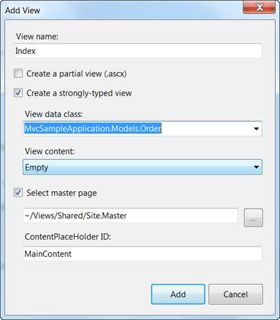
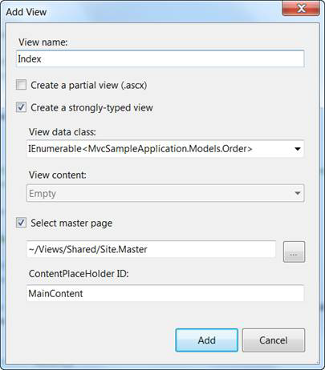

To create a strongly typed view, six steps are involved.
1. Right-click on the View/Home folder.
2. Delete the existing Index.aspx file, making it remain as a default action.
3. Click Add, then select View.
4. Name the view Index.
5. Select Create a strongly-typed view, and in the drop-down menu select your model. In this case it is MvcSampleApplication.Models.Order.

Figure 63: Creating a Strongly Typed View
Note: The View data class drop-down list will be empty until you successfully build your application. It is a good idea to select the menu option Build to build a solution before opening the Add New dialog.
6. In the View data class drop-down, make the model an IEnumerable collection.

Figure 64: Making the Model an IEnumerable Collection